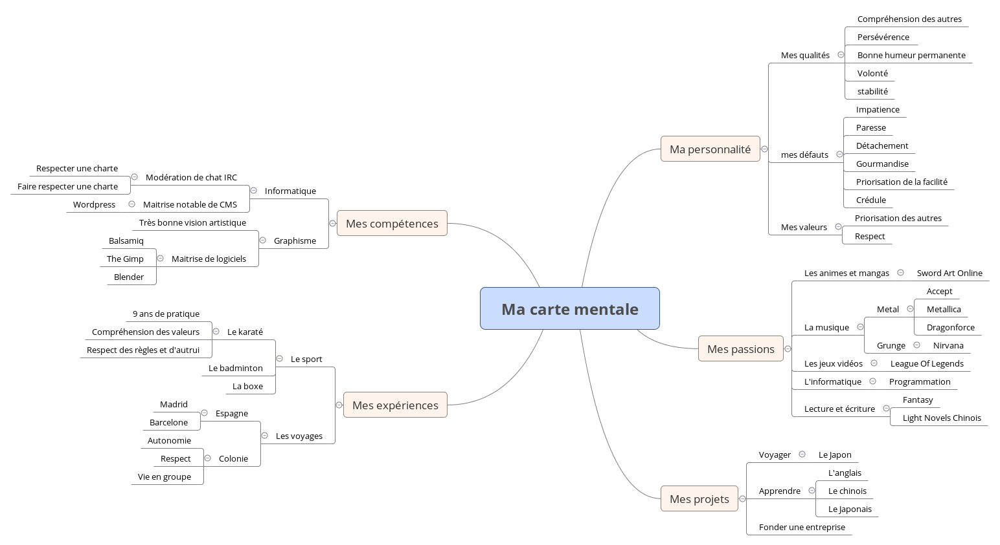
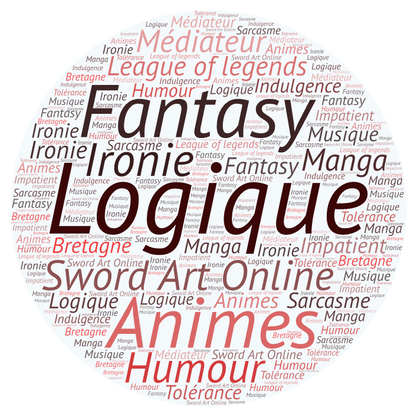

Je suis Tilo Papin. Un étudiant de première année en IUT informatique à Montpellier. Vous pouvez me contacter via le formulaire présent en bas de page. Bonne visite !
Voici une carte mentale me décrivant afin de vous donner une image plus complète de moi-même.
Un nuage de mots afin d'illustrer encore mieux ma personnalité.
Logique
La logique est part entière de mon fonctionnement, j'ai toujours un avis critique sur les choses et c'est grace à ça que je peux m'en sortir simplment. Une conséquence de ce trait de personnalité est mon grand amour pour les mathématiques.
Fantasy
La fantasy a toujours été dans ma vie, dès mon plus jeune âge avec les oeuvres de Miyasaki, ses films d'animations aux mondes plein de créatures fantastiques. Cet univers m'accompagne depuis déjà longtemps et m'a poussé à me lancer dans l'écriture d'un Light Novel, un type de roman caractérisé par de nombreux dialogues et des actions rapides.
Animes
Les animes, plus précisément les dessins animés et les films d'animations Japonaises sont l'une de ma plus grande passion. J'ai toujours été influencé par ceux que je regarde. Tous sont une source d'inspiration inépuisable et de nombreuses oeuvres icroyables ressortent chaques saisons. Récemment le fim d'animation Kimi no na wa ( Your name en anglais ) a séduit le public européen et a dépassé de loin les oeuvres du génie de l'aniation Hayao Miyasaki.
Humour
L'humour est pour moi une caractéristique essentielle chez l'homme. Il est impossible de tenir une discussion un tant soit peu sérieuse avec une personne qui ne va pas comprendre le second degré. L'humour possède ainsi une importante primordiale dans ma vie.
Sword Art Online
Sword art online est un dessin animé Japonais. Il fut celui qui m'a donné cette intérêt pour l'animation Japonaise et possède donc une place symbolique importante dans mon coeur.
Bretagne
Je suis Breton, et même si je me suis déplacé à Montpellier, je garde des souvenirs très importants de cette région.
Ironie et sarcasme
Comme je l'ai déjà dis plus haut avec l'humour, ce trait est primordial. Mais j'accord plus précisément une grande importance à l'ironie qui est une forme d'humour très subtile et qui permet de nombreuses choses.
Médiateur
Ayant un avis critique sur les choses et sur TOUS les événements qui se passent autours de moi, je pèse toujours le pour et le contre. Ainsi j'ai facilement des avantages à présenter pour les deux partit de tous les débats. Il m'est ainsi très simple de modérer des conflits en essayant de mettre d'accord les deux camps. De plus, je possède une expérience dans la modération. En effet je possède un grade de modérateur sur l'un des plus grands chats IRC francophone.
Tolérance et indulgence
En accord avec le "Médiateur" plus haut, j'ai une grande facilité à accepter les défauts des autres personnes. Connaissant moi même mes plus grands défauts, je peux jouer de ça pour m'entendre avec la majorité des personnes.
League of legends
League of legends est un jeu vidéo qui possède aussi une grande importance dans ma vie. De par son univers de fantasy, ses stratégies variés et son histoire passionante il m'a accompagné pendant de nombreuses heures de ma vie.
Musique
La musique a toujours eu une importance dans ma vie. Lors de mon adolescence le groupe Nirvana a été un refuge important. Maintenant j'écoute de nombreux groupes très variés, allant du rap à la pop, tout en passant par le metal.
Enfin, ce portrait-Chinois vous permettra de facilement cerner une partie de ma personnalité.
Si j'étais un manga ?
Je serais Sword Art Online, car c’est un manga qui m’a suivi et qui me suit encore, je prend toujours du plaisir à le revoir pour les scènes épiques, la profondeur des personnages et les dessins magnifiques.
Si j'étais un film ?
Je serais Kimi no na wa, car c’est le film qui m’a le plus touché pour l’expression des sentiments de chaques personnages, le tout dans une légèreté incroyable.
Si j'étais une musique ?
Je serais Come as you are de Nirvana, car c’est une musique immortelle qui m’a accompagné pendant une longue période.
Si j'étais une ville ?
Je serais Tokyo, car c’est la ville qui représente mon objectif et qui concentre une grande partie de mes passions.
Si j'étais une personnalité ?
Je serais Abec le dessinateur de Sword Art Online, pour ses dessins qui font ressortir la magie des mangas et animes.
Si j'étais un objet ?
Je serais des lunettes, pour leur utilité indéniable dans la vie de plusieurs personnes.
Si j'étais un animal ?
Je serais le chat, pour son indépendance totale.
Si j'étais un sport
Je serais le kendo, pour ses valeurs de respect.
Si j'étais un jeu-vidéo ?
Je serais League Of legends, car il permet d’incarner un personnage de fantasy.
Si j'étais un déssert ?
Je serais le fraisier, pour le goût sucré et la légèreté de la crème.
Langues
- Je suis capable de m’exprimer dans la langue anglaise afin de me faire comprendre par mon interlocuteur et échanger avec lui.
- Je suis capable de comprendre la langue anglaise afin de pouvoir échanger avec mon interlocuteur.
- Je suis capable de m’exprimer en anglais dans le langage technique lié à ‘informatique afin d’échanger sur ce domaine.
Programmation
- Je suis capable de programmer en langage C afin de créer des programmes et des logiciels.
- Je suis capable de programmer en langage JAVA afin de créer des programmes et des logiciels.
Bases de données
- Je suis capable de créer une base de donnée afin de gérer différents systèmes.
- Je suis capable de créer différentes requêtes afin d’exprimer les besoins des programmes.
- Je suis capable d’administrer une base de donnée afin de mettre à jour celle-ci pour répondre aux besoins d’un client.
Interfaces
- Je suis capable de créer une maquette d’interface afin de présenter des idées à un client.
Graphisme
- Je suis capable d’utiliser le logiciel THE GIMP afin de créer ou de retoucher différentes images.
- Je suis capable d’utiliser le logiciel BLENDER afin de mettre en forme des modèles en 3D.
Web
- Je suis capable de programmer en HTML et CSS afin de créer des sites web.
- Je suis capable d’utiliser divers CMS afin de créer et d’administrer des sites web.
Ce projet à été réalisé par moi ainsi que trois autres collegues dans le cadre du projet tutoré de premier semestre en IUT informatique. Le sujet était libre et seulement limité par quelques critères de notation.
Visiter le siteCe projet a été réalisé pour soutenir un exposé sur l'entrprise IBM lors d'un cours d'économie. Si je met cette réalisation ici, c'est pour montrer une de mes réalisations graphique dont je suis fier.
Lien vers le preziCeci est un projet personnel, étant passioné de lecture je me suis investit dans l'écriture d'une histoire en m'inspirant de plusieurs romans que j'ai lu. C'est un projet encore en cours.
Lire affinité zéro